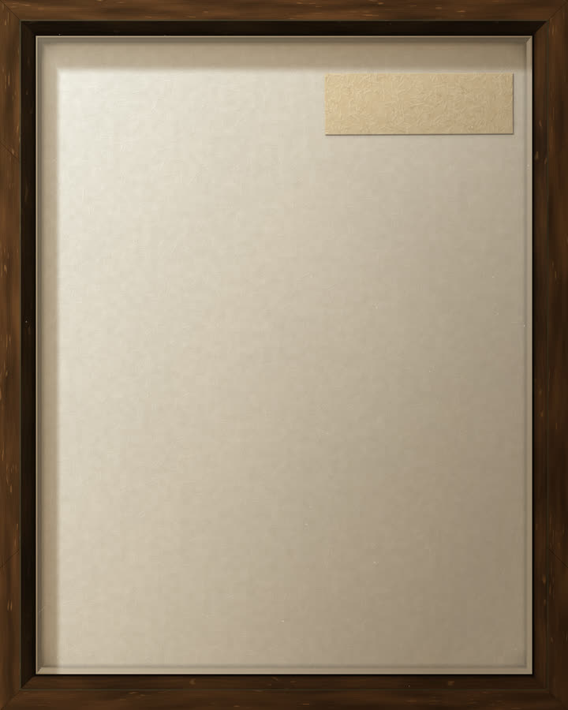

Ten animals, each drawn in code by the model that a published paper gives for its form. No image files: every plate is computed in your browser, and every number on it is cited.

Claude Code, running Opus 5.5, wrote every line. I directed and gave notes.
Because every image is code, the series shares one light, one palette and one line weight, and any detail can change without disturbing the rest. That control is what made the film possible.
What didn’t work. The forms hold up, but the surfaces still read as computed. Only the dragonfly passed its reviewer, and a round aimed at photographic realism returned REVISE on all 45 reviews.